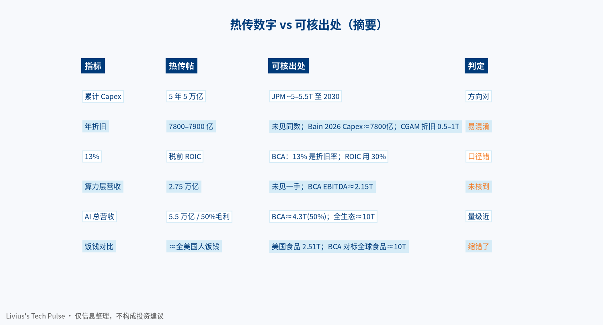
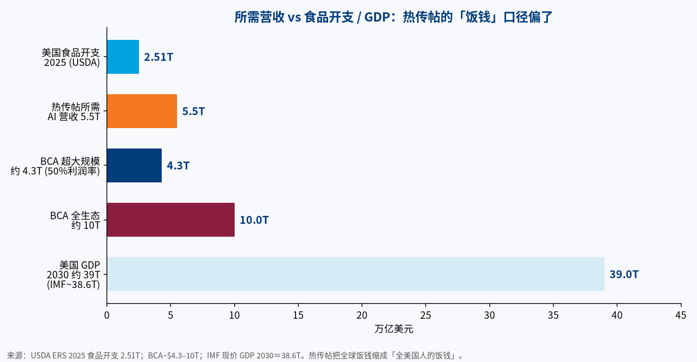

一条中文热帖把彭博系播客/访谈里的算法压成一句话：科技巨头未来 5 年砸 5 万亿美元建机房，每年折旧约 7800–7900 亿；要拿到 13% 税前资本回报，2030 年光卖算力就要收 2.75 万亿；再按 OpenAI/Anthropic 一层 50% 毛利率倒推，AI 总营收得冲到 5.5 万亿——约占 2030 年美国 GDP 的 14%–15%，「差不多等于今天全美国人买食物的总花销」。
这句话有冲击力。问题是：链条里哪些是一手算法，哪些是压缩时写歪了。 本文先核数字，再把 Capex → 折旧 → 所需营收的逻辑拆开，最后落到 Token 经济：谁在付费、付的是什么。
| # | 判断 | 来源 | 置信度 |
|---|---|---|---|
| 1 | 「饭钱级营收」压力测试的一手出处更接近 BCA Research 的 Peter Berezin：稳态年 Capex 约 1 万亿时，全生态或需约 10 万亿/年 AI 相关营收，对标的是全球食品/医疗开支量级 | Yahoo Finance 访谈、Bitget 转述 BCA 8 月报告 | 高（访谈原话）/ 中（报告细节二手） |
| 2 | 热传帖把 13% 折旧率写成了 13% 税前 ROIC；BCA 原文里 ROIC 假设是约 30% 税前 | 同上 | 高（口径错误可复现） |
| 3 | 「5 年 5 万亿 Capex」与 J.P. Morgan 累计至 2030 约 5–5.5 万亿同量级，但不是 BCA 那条压力测试的同一套输入 | J.P. Morgan AI Capex 展望、Bloomberg Law | 中高 |
| 4 | 「≈全美国人的饭钱」不成立：美国 2025 食品总开支约 2.51 万亿；热传 5.5 万亿大约是美国食品开支的 2 倍。BCA 对标的是全球食品约 10 万亿 | USDA ERS | 高 |
| 5 | 算法真正要问的不是「会不会亏」，而是：利用率、折旧年限、利润率、需求是否全球而非仅美国——任一项松动，所需 Token/营收都会大幅下移 | 综合 BCA / Gartner / Bain | 中（框架推断） |
| 指标 | 热传帖 | 可核出处 | 判定 | 置信度 |
|---|---|---|---|---|
| 累计 Capex | 未来 5 年约 5 万亿美元 | JPM：至 2030 累计约 5–5.5 万亿；BCA 压力测试用的是年 Capex 约 1 万亿稳态 | 方向对，输入不完全同一套 | 中高 |
| 年折旧 | 7800–7900 亿美元 | 未见一手写死此数。相近噪声：Bain 称超大规模 2026 Capex 或近 7800 亿；Capital Gearing 估 2030 年折旧或在 0.5–1 万亿 | 易与「年 Capex」混淆 | 低（热传此数） |
| 13% | 税前资本回报率 | BCA：设备综合折旧率约 13%；税前 ROIC 假设约 30% | 口径错 | 高 |
| 算力层营收 | 2030 年 2.75 万亿 | 未见一手。BCA 链条里更接近：需 EBITDA 约 2.15 万亿（再除以利润率才得到营收） | 未核到 / 可能把 EBITDA 与营收搅在一起 | 低 |
| AI 总营收 | 5.5 万亿（50% 毛利） | BCA：50% 利润率 → 超大规模约需 4.3 万亿营收；利润率 30% → 约 7.2 万亿；把 neo-cloud、中国厂商等并入 → 约 10 万亿 | 量级接近 4.3T 一侧，但 5.5T 非一手 | 中 |
| 美国 GDP 2030 | 约 39 万亿 | IMF 现价 GDP 2030 约 38.6 万亿（约数） | 大致成立 | 中 |
| 占 GDP | 14%–15% | 5.5 / 39 ≈ 14%；但 WSJ 转述 Van Nieuwerburgh 的「饭钱」对照更接近 约 9% of GDP 的另一套算法 | 热传自洽，跨源不可直接等同 | 中 |
| 食品开支对照 | ≈今天全美饭钱 | USDA：2025 美国食品总开支 2.51 万亿；BCA 口头对标全球食品/医疗约 10 万亿 | 缩错地理范围 | 高 |

热帖的情绪对，结构要对回 BCA 那条更干净的链（经 2026-08 报告与 Yahoo Finance 访谈转述）：
注意三件事：
| 假设 | 更紧时 | 更松时 | 为什么重要 |
|---|---|---|---|
| 利用率 | 训练空转、推理上座率低 | 机时打满、批处理/推理复用高 | 同样 Capex，Token 产出差一个数量级 |
| 折旧年限 | 经济寿命 2–3 年 | 会计/经济寿命 5–6 年甚至更长 | 年折旧与所需毛利同向放大；Goldman 等讨论过寿命假设对累计成本的摆动 |
| 利润率 | Token 价格通缩、开源分流 | 高价值 Agent / 垂直场景保住溢价 | BCA 里 50%→4.3T、30%→7.2T，差一倍 |
| 需求地理 | 只看美国消费者掏钱 | 全球企业 + 消费 + 政府 | 热帖用美国 GDP 做分母，BCA 对标全球食品；分母选错，百分比会吓人 |
| 收入归属 | 只算模型公司账单 | 云、广告、软件、行业方案都算「AI 拉动」 | Gartner 强调：很多 AI 收入不会落在重资产机房所有者账上 |
Gartner（2026-10-14）给出另一条平行压力测试：按已宣布 Capex、融资成本与 12% ROIC，至 2030 累计或需约 8.5 万亿营收，而其预测可归因营收上限约 3.6 万亿——结论方向与 BCA 同属「收入跟不上资产」，但输入与年化口径不同，不能和热帖的 5.5 万亿直接加减。
Capex 账要闭环，终局几乎总是：单位 Token 价格 × Token 用量 × 能留存的毛利。
近期可观察的旁证（不是全国份额）：
对东南亚市场的含义更具体：本地推理、多语言配音、短剧与办公 Agent 会贡献 Token 用量，但客单价与广告/订阅结构不同于美国企业 API。用「美国饭钱」做全球叙事，会系统性高估单一市场的支付能力，也低估跨境、中低价模型对用量的拉动。

可保留（改准之后）： 若超大规模云把年 AI Capex 维持在万亿级，并用偏紧的折旧与回报假设倒推，所需的年化 AI 相关营收会到数万亿美元量级；BCA 把全生态上沿说到约 10 万亿/年，与全球食品开支同量级——这是压力测试，不是明年指引。
应删或改写：
Livius's Tech Pulse · 仅供信息整理，不构成投资建议。